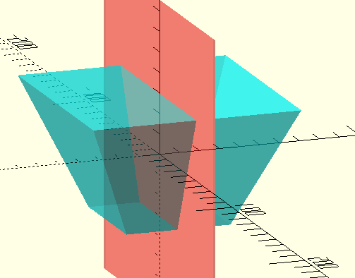
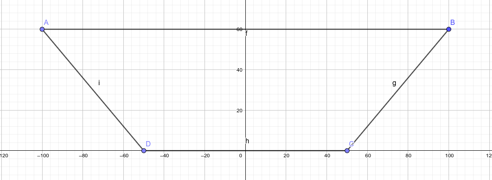
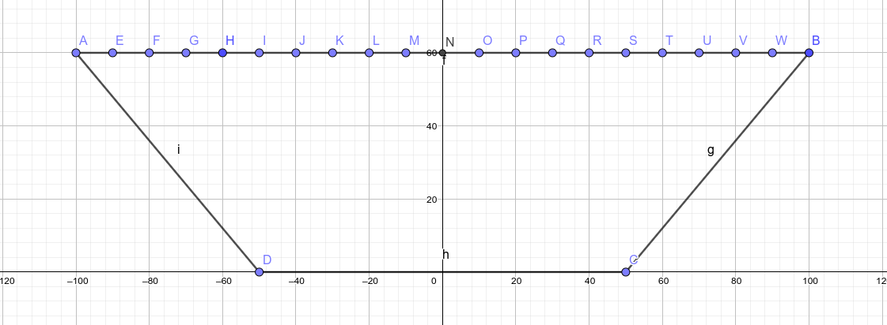
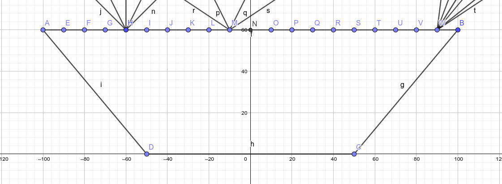
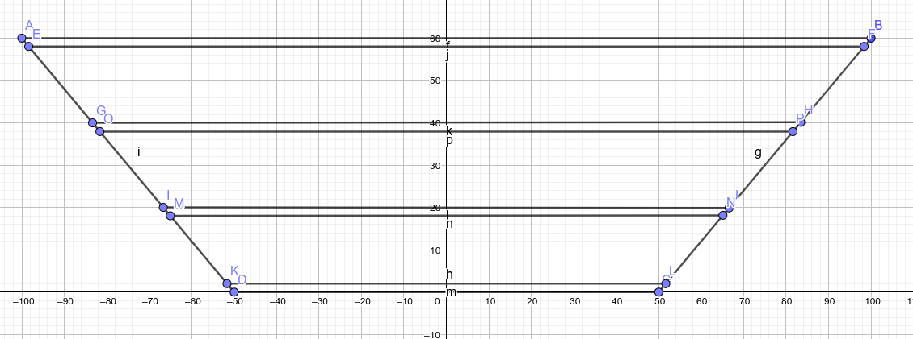
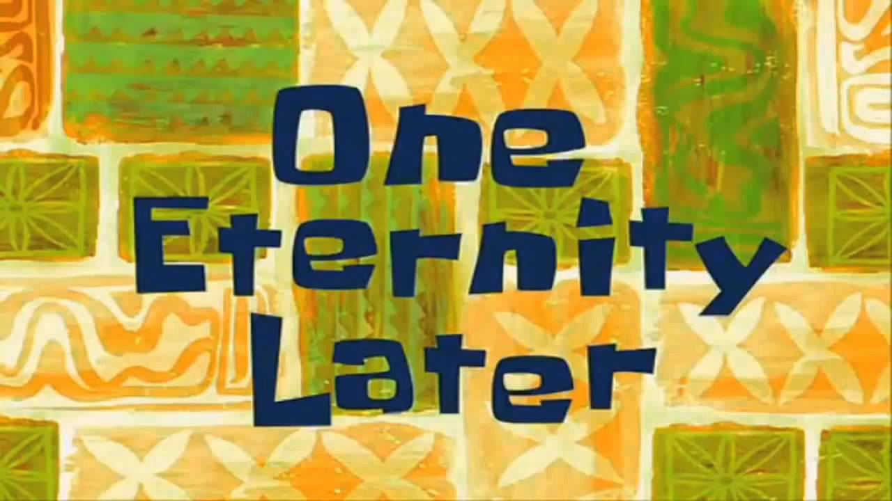

A cost-effective AGILE
August 2022 Work in progress
Background
Earlier this year I got interested in a Stanford article and a Nature paper that used a device called an AGILE (Axially Graded Index LEns) to enhance solar panels. An AGILE is a complex bit of glass-like plastic that resembles an upside-down truncated cone or pyramid.
I’ll quickly summarise the papers:
The principle is pretty simple: the pyramid is made of a series of horizontal layers with increasing refractive indices going deeper (towards the narrow end), and the sloped sides are coated with a reflective material. Any light that enters the wide top of the device is curved towards the bottom by the successive layers, and reflecting against the sides only increases the effect due to the angle. In the end, all light that enters the top of the AGILE at any angle will exit at the bottom.
Due to the angle, the top surface is larger than the bottom, which means that light is effectively concentrated. At a wild guess, if the top surface is four times the bottom, then the light will be four time concentrated on average.
The AGILE also concentrates input light that arrives at any angle and curves it such that it exits the lens at angles that are bound by the angles of the device.
These properties make AGILEs an attractive solution for increasing the cost-effectiveness of solar panels: not only can the active surface (the part actually covered in photovoltaics) be reduced compared to the solar panel’s total surface, but the panel can operate at much wider input angles, which is a well-known issue with solar installations, and it does so with a static and completely passive device that doesn’t require much overhead in terms of space.
Building one
This paper describes how to build an AGILE:
- Obtain a set of optical (i.e. extremely clear) resins that can be cured with UV and have a range of refractive indices (RI) when cured. Remember this bit.
- Build a mould: a 3D printer does the trick here, plus some post-processing (sanding) to smooth the sides. The researchers seem to have directly built the negative, but it might be easier for repeatability and ease of demoulding to print the positive and make a silicon mould.
- Pour a layer of the highest RI resin.
- Cure it with a UV lamp.
- Repeat 3–4 with decreasing RI resins.
- Demould the pyramid, finish the edges.
- Coat the angled sides with a reflective layer. It might be sufficient to spray paint a high concentration mixture of silver pigment powder and acrylic base, or a deposition process could be used with silver nitrate.
So, that’s pretty simple, and it sounds doable in DIY, right?
Step one, obtain a set of optical resins, like, uhhh, these ones. Wait, what’s the price of those? Uhhh $230 USD per pound, so about $500 USD per kilogram. And you’d need at least five, so for a kg of each that will come to a shiny $2500 USD just to get started. I can’t imagine we’d need less than about a kilo total per panel, given some maths that I’ll leave to reader discretion, so at a glance we’re looking at a cool $500 USD per ~standard two square metre solar panel. Plus the cost of the photovoltaics and frame and so on, but that’s decently cheap, on the range of $100 USD.
So we’re looking at a device that at least quintuples the cost of a solar panel, just to get some better utilisation in the mornings and evenings. Not very cost effective, and prohibitive for DIY.
Alternative materials
Can we find alternative materials that are much cheaper and would allow us to control their RI? Well, solids are a no. Resins are it, and finding optical-grade resins with precise RIs… we’re back at square one. Glasses are a no-go. Diamond and other lattices or crystals are also exorbitant.
What about liquids? No, hear me out.
Glycerol (also called glycerine) is “a colorless, odorless, viscous liquid that is sweet-tasting and non-toxic.” It’s also miscible in water. And it has a RI of 1.46. Water, by the by, has a RI of 1.33.
Mixing glycerol and water at varying ratios changes the RI of the mixture in between these two extremes. Further, adding a water-soluble compound, like sugar or salt, may increase the RI, for some fine tuning.
So, if we can create water-glycerol compounds at precise ratios, we can possibly get a set of colorless odorless non-toxic liquids that have a range of RI, from 1.33 to 1.46.
We can then layer these liquids, partitioned by much thinner pieces of a strong plastic, like acrylic which has a higher RI at 1.50, but the thickness difference should make that negligible. The bottom of this new AGILE can then be a thicker bit of acrylic, for the final step at 1.50.
What’s the cost of glycerol? Less than $10 USD per kg. Acrylic sheeting is about $20 USD per square metre depending on thickness and retailer. Water will need to be pure or distilled, and that costs about $0.50 USD per litre.
Pro: we’re looking at something about 40 times cheaper than with resins.
Con: it sounds absolutely bonkers.
Preliminaries
We need to do a few things before we can actually get to the hands on bit:
Build or obtain some kind of rig or tool to measure RI
I… thought this was going to be hard, but actually refractometres are very common! Turns out they’re used a lot in a (somewhat dodgy-sounding tbh, how would you control for other effects by contaminants?) practice to measure the amount of sugar in a solution, like fruit juices, or conversely the amount of water in a sugary liquid, like honey. And apparently also for alcohol in wines and beer. Again, I’m a bit concerned here, in many wines and some beers you’d have both alcohol and sugar, surely that would be hard to distinguish? But whatever, I don’t know enough about it.
For my uses, though: an analog refractometre is about $20, and a digital one around $150. Digital ones are much more precise, but finding one that has both the required range and shows the RI value instead of some derived specialised unit like Brix was quite tough! I bought both an analog and a digital one; after this project I’m sure I can find other uses, and mum does keep bees, so.
Find some photovoltaic cells (not entire panels) and rig at least one to measure output current
Finding them is easy: AliExpress has a selection, and I picked one.
I picked them on a combination of price, stated power output, and shape. 52mm squares sounds pretty good to me, it will let me work at the macro level. The research cited above worked at much smaller sizes, with AGILEs on the order of 10mm wide or less. I was concerned about this because finding cells that tiny is tougher, and the wiring will get annoying, but most importantly the experimental setup seen in one of these papers looked to me like the agile didn’t cover the entire cell. That felt like a waste of some of the cell, and could even affect measurements.
So anyway, I bought a stack of cells, and I’m awaiting them. I’ll be measuring output current with my regular ampmeter.
Figure out what the optimal size of the device and the number, RIs, and thicknesses of the layers is
This is probably the bit you’re here for. The rest of the article will be updated when I make progress on the physical construction of the object.
I want not only to construct an AGILE, but I want to construct the best AGILE I can with my constraints. To do that, I’m going to define a model for simulation, parametrise it, assign a score to a parameter set, and then run an exhaustive search on the parameter space, to finally rank and find the ideal AGILE I can make.
“Exhaustive? That’s gonna take forever!”
Well, I’ll use Rust for the actual compute, and I’m going to start by strictly defining the model to both get an idea of the possibility space and to figure out how many calculations I’ll need to do, as well as a simple estimate of how long it will take.
The model
So, I’m going to take the AGILE object, and I’m going to cut a section down the middle:

Which will look like this in 2D:

On that top surface, in the diagram labelled A–B, I’m going to define a series of entry points at regular intervals starting from one end (A) to the other (B). The distance from the last point to the end will not always be an exact interval, of course. In the below diagram I’m showing points every 10 units, but in the actual simulation I’m going to go with every 1mm for extra precision.

From each of these points I’m going to define a set of angles of incidence. Again in the diagram I’m showing only a few angles on a few points for clarity, but in the simulation I’ll go with integer angles from 1° to 179° inclusive, except at the two extremes where it doesn’t make sense, and the range will be bound a little tighter.

For each of these angles at each of these points, I’ll compute the path the ray of light takes inside the lens, where it exits, and at what angle. Then, over the the entire set of rays of a particular parametrised AGILE, I’ll calculate:
- the proportion of rays that exit at the bottom (higher is better)
- the average exit angle for those that exit at the bottom (closer to vertical is better)
- the length of the path the light takes inside the lens (lower is better)
Combining these three measures, weighted in that order, will produce a single score for any given parameter set. Getting that score will mean computing 178 (entry angles) × 105 (entry points) rays given a fixed 104mm top width for the section, so at most 18690 rays per param set.
Model parameters
So, the way the AGILE is going to be constructed, it’s going to be a laminate of thinner partitions, made of acrylic, and thicker layers, which are filled with a liquid. The top and bottom will be partitions, and there will be a partition in between each layer.

The thickness of the partitions is the same for all, and for model simplicity I’ll say that the thickness of the layers is also the same through the AGILE. If the model works out to be sufficiently fast, these could be made to vary, to possibly get more options or better optimisation.
The RI of each layer will be a variable. For model simplicity I won’t constrain the layers to be in increasing RI top to bottom; that’s likely what it will work out to anyway but maybe there will be some surprising behaviour coming out of that.
The number of layers will also be a variable.
The width of the bottom is set to 52mm because that’s the size of the PV cell tiles I’ve bought. I’m going to set that the top width be 104mm, exactly twice, for now. Making it a variable increases the possibility space a lot; for now I’ll keep it fixed.
With all this, the height of the pyramid will be determined entirely by the variables above.
The variable set will be described like this:
#![allow(unused)] fn main() { struct ParamSet { /// RI of the layers /// /// This specifies both the _amount_ of layers (number of elements in /// the slice) and the _refractive index_ of each. layers_ri: &[f64], /// Thickness of each layer in tenths of mm layers_thickness: u32, /// Thickness of each partition in tenths of mm partitions_thickness: u32, } }
On top of this, there will also be some bounds:
- The number of layers will be minimum 2, maximum 10. Two is the minimum useful, ten is arbitrary.
- The thickness of partitions will be minimum 0.2mm, maximum 3mm, from the set
0.2mm,0.4mm,0.6mm,0.8mm,1.0mm,1.2mm,1.5mm,2.0mm,3.0mm. These are supply constraints, save for the maximum which is arbitrary. - The thickness of layers will be minimum 3mm, maximum 28.6mm, in increments of 0.1mm. The bounds are
arbitrary on a general gut feel of what will be useful; the increment is the precision of a 3D
printer. The range is chosen so it fits in a
u8. - The refractive indices will be minimum 1.33, maximum 1.50, in increments of 0.01. I don’t yet know if it will be possible to measure or control RI to that precision, but it seems more likely than 0.001. The minimum is water (1.333), the maximum is acrylic (1.50): we could totally have a layer that it entirely acrylic. RIs between 1.46 (pure glycerol) and 1.50 are yet unknown if they are achievable (with additives?) but it would be easier to exclude results with these values rather than not generate them in the first place and then find out we could have.
So, to finish our estimate and get onto the modelling work:
- Number of layers: 8 possibilities
- Thickness of layers: 256
- Thickness of partitions: 9
- Refractive indices: 17 increments per layer, so 17×10=170 worst case
Possibility space is thus at most 8×256×9×170 = 3 133 440.
Multiplied by the amount of rays to compute for each param set, we need to perform about 60 billion ray computes, or about 2 trillion individual refraction and reflection calculations.
Welp, that’s a lot. Gotta go fast!
Hold on.
What?
It’s not 17 times 10.
Huh? Oh. Oh no.
It’s 17 possibilities, in 10 boxes. Oh no. It’s 17 to the power of 10.
(Actually, it’s 17¹+17²+17³+… 17¹⁰ but that’s only marginally larger than 17¹⁰.)
That makes the possibility space about, uhhh, 39 481 224 546 373 632? 39 quadrillions? I’m not super loving it.
Evolving past this
Alright, so, an exhaustive search is firmly out. What else is out there?
Well, this entire project is for fun, and I’ve always wanted to play around with genetic algorithms. They just sound so neat! This seems like the perfect pretext.
The first interesting crate I find is genevo. It looks complete and flexible. Let’s try it out.

Implementing the genetic algorithm machinery with genevo was very soothing, really. Just keep plugging at it until the thing compiles. A very Rusty afternoon.
However, I come to running it and I find that at the start of the process, I defined my fitness function like this:
#![allow(unused)] fn main() { fn fitness_of(&self, params: &ParamSet) -> u64 { raytrace(*params).summarise() } }
What does that summarise function do? Well, it just summarises Performance:
#![allow(unused)] fn main() { #[derive(Clone, Copy, Debug)] pub struct Performance { /// Proportion of rays that exit at the bottom. /// /// Calculated as {bottom exit rays} * u32::MAX / {total rays}. /// /// Higher is better. pub exit_ratio: u32, /// Average of exit angles (to the normal) for rays that exit at the bottom. /// /// In 10000th Angle. /// /// Lower is better. pub exit_angle: u32, /// Total distance light travels inside the lens. /// /// In micrometres. /// /// Lower is better. pub light_travel: u32, } impl Performance { pub fn summarise(self) -> u64 { let one = self.exit_ratio as u64; let two = u32::MAX.saturating_sub(self.exit_angle) as u64; let three = u32::MAX.saturating_sub(self.light_travel) as u64; one * 10 + two * 5 + three } } }
And how do I get a Performance? Ah:
#![allow(unused)] fn main() { pub fn raytrace(params: ParamSet) -> Performance { todo!() } }
Raytracing. But like, the hard way.
I barely know enough about it to know that the activity is called raytracing, and that it’s not the 3D graphics kind of raytracing. Something that’s mentioned pretty early on is Maxwell’s equations, which is an intolerable amount of maths, fuck that.
No, failing to find any physics raytracing crates, I’m going to use good old the laws of refraction and the law of reflection. Very simply:
- Refraction:
sin(input) / sin(output) == ri(output) / ri(input) - Critical input angle:
arcsin(ri(output)/ri(input)), where the output is always 90° - Total internal reflection: when the input angle is higher than the critical angle
- Reflection: output angle == input angle, but staying on the same side
All angles are to the normal, that is the perpendicular to the plane upon which the ray is reflecting or through which it is refracting. (If it’s not a plane it’s perpendicular to the tangent at that point, but in my model everything is planes, so idgaf.)
If you’ve done high school physics, you probably remember this.
Coding up these things is pretty easy. The hard bit is figuring out where a ray is in the model, what boundary it will be intersecting with next, at what angle, and at what position.
At first I thought, you know what, I’ll do it with a turtle. I’ll advance my ray a bit, I’ll take note of what I passed through, and
wait, how will I know I’ve passed something through?
and I basically got stuck there.